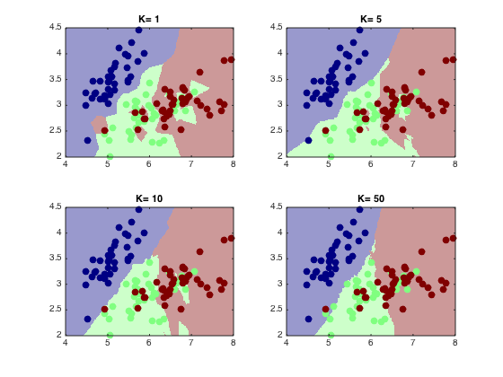
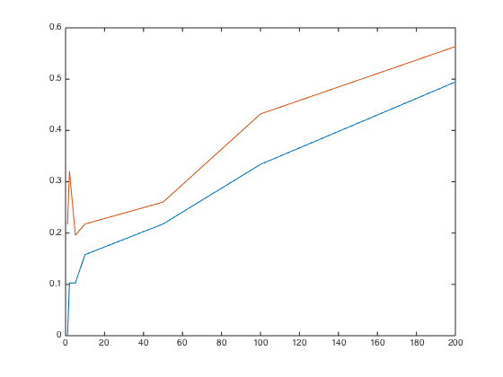
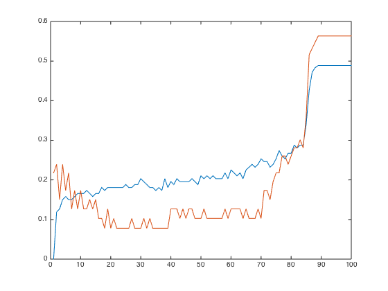

Contents
Problem 2
Author: Varad Meru (vmeru@uci.edu) Course: CS 273, Machine Learning (http://sli.ics.uci.edu/Classes/2015W-273a) Homework Description - http://sli.ics.uci.edu/Classes/2015W-273a?action=download&upname=HW1.pdf Started on 08th Jab, 15.
%{ Problem 2 - In this problem, you will continue to use the Iris data and explore a KNN classifier using provided knnClassify Matlab class. For more information on classes in general, and this class in particular, see the Matlab OOP notes on the course page. %} % Fetching the dataset and separating it into X and Y. iris=load('data/iris.txt'); % load the text file y = iris(:,end); % target value is last column X = iris(:,1:end-1); % features are other columns features = char('Sepal length','Sepal width','Petal length','Petal width','Species'); features_short = char('SL','SW','PL','PW','SP'); % Note: indexing with ":" indicates all values (in this case, all rows); % indexing with a value ("1", "end", etc.) extracts only that one value % (here, column % indexing rows/columns with a range ("1:end-1") extracts % any row/column in that range % Shuffle and split the data into training and test subsets:- [X, y] = shuffleData(X,y); % shuffle data randomly % (This is a good idea in case your data are ordered in some pathological % way, % as the Iris data are) [Xtr, Xte, Ytr, Yte] = splitData(X,y, .75); % split data into 75/25 train/test whos
Name Size Bytes Class Attributes X 148x4 4736 double Xte 37x4 1184 double Xtr 111x4 3552 double Yte 37x1 296 double YteHat 37x1 296 double Ytr 111x1 888 double features 5x12 120 char features_short 5x2 20 char iris 148x5 5920 double knn 1x1 5360 knnClassify y 148x1 1184 double
Class Objects
An old-style class is created using a directory preceded by @. For example, included in the code is a kNN classifier, @knnClassify. The methods associated with this class are the Matlab .m files located within it. The constructor is knnClassify; all the other functions are called by providing a knnClassify object as the first argument. (That tells Matlab / Octave where to look for the function.) So, you can build and "train" a kNN classifier on Xtr,Ytr and make predictions on some data Xte with it using e.g.,
knn = knnClassify( Xtr, Ytr, 1 ); % replace or set K to some integer YteHat = predict( knn, Xte ); % make predictions on Xtest % If your data are 2D, you can visualize a data set and a classifier's % decision regions using e.g., %plotClassify2D( knn, Xtr, Ytr ); % make 2D classification plot with data (Xtr,Ytr) % (This function plots the training data, then calls knn's predict function % on a densely spaced grid of points in the 2D space, and uses this to % produce the background color.)
Part (a)
Modify the code listed above to use only the first two features of X (e.g., let X be only the first two columns of iris, instead of the first four), and visualize (plot) the classification boundary for varying values of K = [1, 5, 10, 50] using plotClassify2D.
iris=load('data/iris.txt'); % load the text file y = iris(:,end); % target value is last column X = iris(:,1:end-1); % features are other columns [X, y] = shuffleData(X,y); X = X(:,1:2); [Xtr,Xte,Ytr,Yte] = splitData(X,y, .75); h=figure; i = 1; for k=[1, 5, 10, 50]; subplot(2,2,i); i = i+1; knn = knnClassify( Xtr, Ytr, k ); YteHat = predict( knn, Xte ); plotClassify2D( knn, Xtr, Ytr ); title(strcat({'K= '},num2str(k))) hold on; end; hold off;
Part (b)
Again using only the first two features, compute the error rate (number of misclassifications) on both the training and test data as a function of K = [1, 2, 5, 10, 50, 100, 200]. You can do this most easily with a for-loop.
iris=load('data/iris.txt'); % load the text file y = iris(:,end); % target value is last column X = iris(:,1:end-1); % features are other columns [X, y] = shuffleData(X,y); X = X(:,1:2); [Xtr,Xte,Ytr,Yte] = splitData(X,y, .75); % Training with Xtr and Ytr K=[1,2,5,10,50,100,200]; errorsTr = zeros(size(K)); errorsTe = zeros(size(K)); for i=1:size(K,2); knn = knnClassify( Xtr, Ytr, K(:,i)); YtrHat = predict( knn, Xtr ); errorsTr(1,i) = errorTrain(Ytr, YtrHat); YteHat = predict( knn, Xte ); errorsTe(1,i) = errorTrain(Yte, YteHat); end; figure; plot(K, log(errorsTr+1)); hold on; plot(K, log(errorsTe+1)); hold off;
Part (b) - extension
Again using only the first two features, compute the error rate (number of misclassifications) on both the training and test data as a function of K = [1, 2, 5, 10, 50, 100, 200]. You can do this most easily with a for-loop.
iris=load('data/iris.txt'); % load the text file y = iris(:,end); % target value is last column X = iris(:,1:end-1); % features are other columns [X, y] = shuffleData(X,y); X = X(:,1:2); [Xtr,Xte,Ytr,Yte] = splitData(X,y, .75); % Training with Xtr and Ytr K=1:100; errorsTr = zeros(size(K)); errorsTe = zeros(size(K)); for i=1:size(K,2); knn = knnClassify( Xtr, Ytr, K(:,i)); YtrHat = predict( knn, Xtr ); errorsTr(1,i) = errorTrain(Ytr, YtrHat); YteHat = predict( knn, Xte ); errorsTe(1,i) = errorTrain(Yte, YteHat); end; % Creating figure. The X axis is various values of K. figure; plot(K, log(errorsTr+1)); hold on; plot(K, log(errorsTe+1)); hold off;
Temp Code
%{ h=figure; semilogy(errorsTr,log(errorsTr + 1)) hold on; semilogy(errorsTe,log(errorsTe + 1)) hold off; h=figure; semilogx(errorsTr,log(errorsTr + 1)) hold on; semilogx(errorsTe,log(errorsTe + 1)) hold off; h=figure; semilogx(K, log(errorsTr + 1)); hold on; semilogx(K, log(errorsTe + 1)); hold off; h=figure; semilogy(K, log(errorsTr + 1)); hold on; semilogy(K, log(errorsTe + 1)); hold off; %}